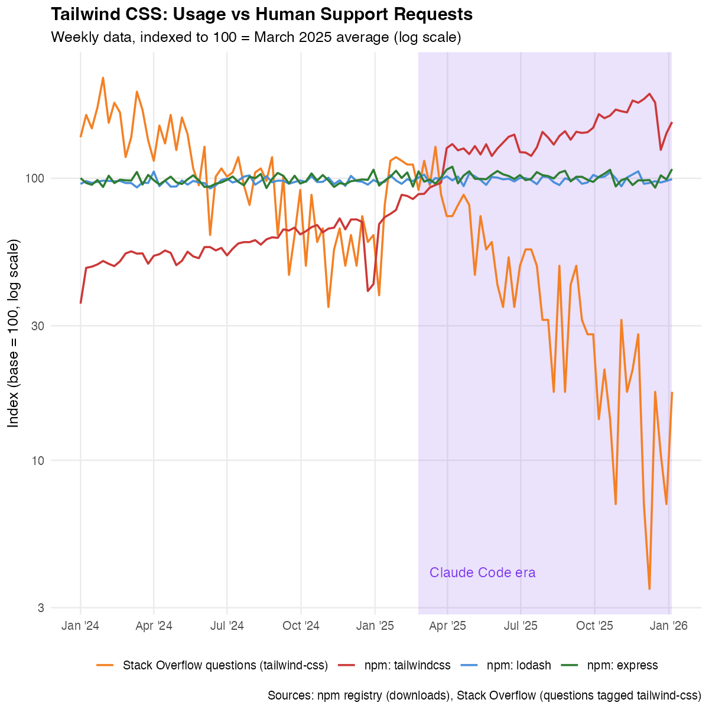
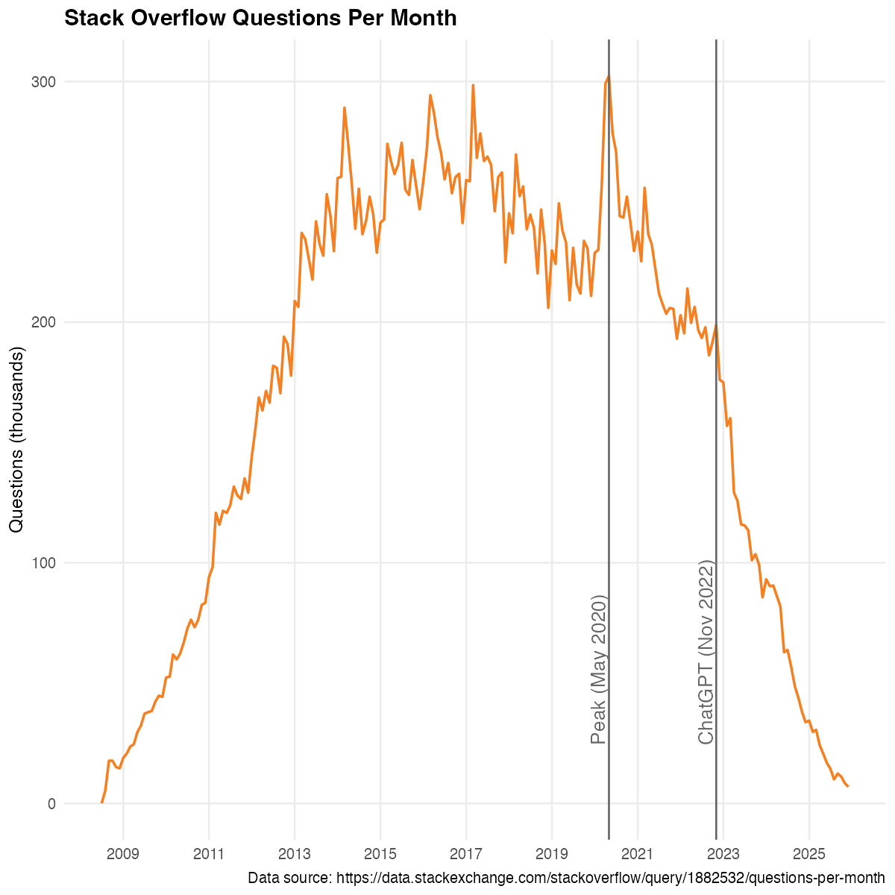

Miklós Koren, Gábor Békés, Julian Hinz, Aaron Lohmann
February 2026
“I ship code I don’t read.”
Peter Steinberger OpenClaw (2026)
70–90%
of code at Anthropic is written by Claude
Dario Amodei Axios AI+ Summit (2025)
30%
of new code at Google is AI-generated
Pichai (2024)
Usage ↑
Engagement ↓
How can both be true?

npm downloads vs Stack Overflow questions
“Traffic to our docs is down 40% despite Tailwind being more popular than ever. Revenue is down close to 80%.”
Adam Wathan Tailwind CSS creator (2026)

25% decline after ChatGPT launch (del Río-Chanona et al., 2024)
Productivity
AI lowers cost of using and building on OSS
Demand diversion
Users don’t engage, maintainers lose revenue
All require direct engagement
π = π̄(1 - v)
Revenue falls with vibe coding share v
Productivity gain: ~12% cost reduction
Revenue loss: ~70% at high adoption
Demand diversion dominates
Welfare can fall despite better AI
The same feedback loop that grew OSS…
more entry → better ecosystem → lower costs → more entry
…now works in reverse
less entry → worse ecosystem → higher costs → less entry
84%
of revenue must come from sources independent of how users access the software
The technology is ready. The will is not.
Vibe coding is a fundamental shift in how software is produced and consumed.
The productivity gains are real. So is the threat to OSS.
koren.mk
This research was funded by the European Union under the Horizon Europe grant 101061123 and by the National Research, Development and Innovation Office (Forefront Research Excellence Program contract number 144193). Views and opinions expressed are those of the authors only and do not necessarily reflect those of the European Union, the European Commission, or the National Research, Development and Innovation Office.